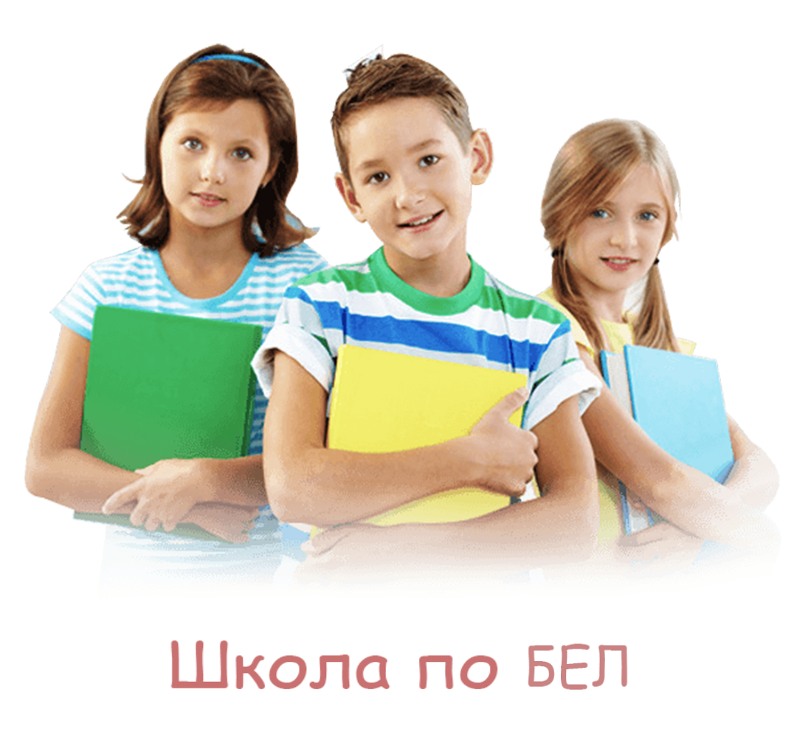

Курсовете започват на 01.09.2022г. Занятията в школата се извършват в 2 групи до 30 ученици. За първи клас ще се провежат всяка събота от 9:00 до 12:00 и неделя от 9:00 до 12:00, а за втора втори клас всяка събота от 13:00 до 16:00 и неделя от 13:00 до. 16:00. Всяко занятие включва и самостоятелна работа под ръководството на преподавател. Установените пропуски в знанията на всеки ученик се отстраняват и попълват. Всека седмица тук ще качваме презентациите от урока и задачите за домашна работа. Отделно има лятен и зимен лагер на които ще ви очакваме:).
